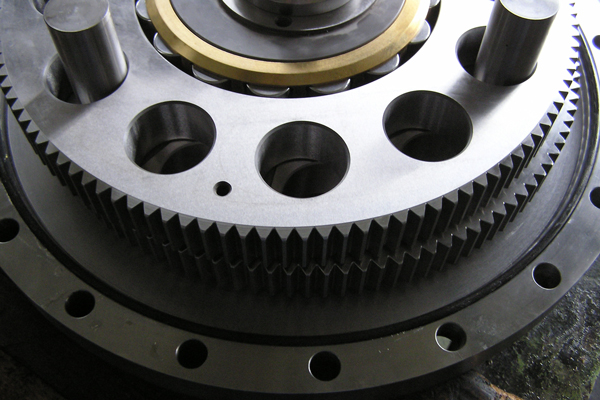
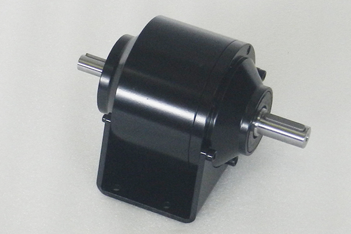
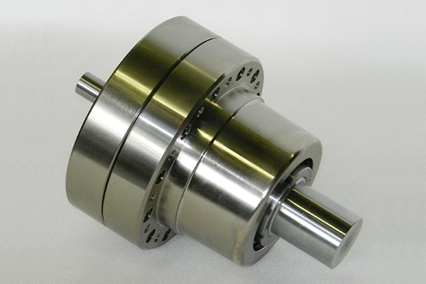
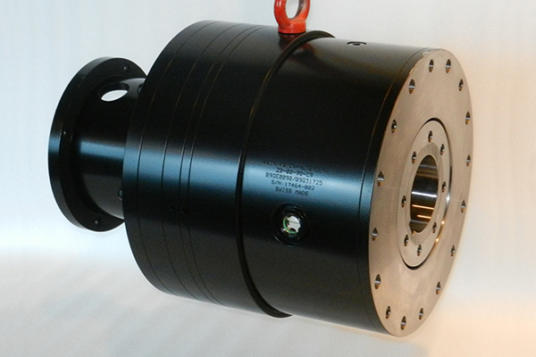
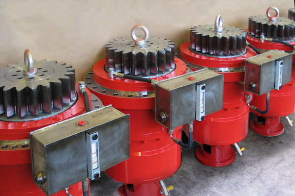
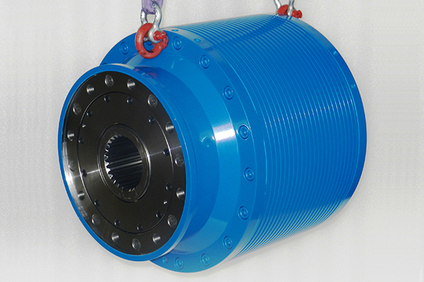
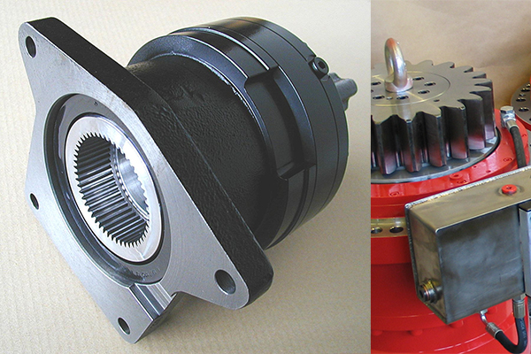

Produkte Übersicht.

Wir bauen Standardgetriebe und entwicklen Sondergetriebe nach Mass.
Dabei beachten wir vier Konstruktionsprinzipien:
• Alle unsere Getriebe haben eine symmetrische, kompakte und koaxiale Form.
• Alle Getriebe erlauben grösste Untersetzungen auf minimalstem Raum.
• Alle Getriebe haben Lebensdauerschmierung und sind daher absolut wartungsfrei.
• Alle Standardgetriebe basieren auf einem ”Baukastensystem”.
ACBAR Excentergetriebe.
Kompakt und unverwüstlich – für höchste Ansprüche.
Mehr zum Thema ...
Servo-Getriebe.
Hochdynamische Zykloiden-Getrieb von höchster Präzision.
Mehr zum Thema ...
Zweischeibengetriebe.
Robuste, starke und zuverlässige Getriebe – auch für’s Grobe.
Mehr zum Thema ...
Richt- & Schwenkgetriebe.
AKIM Richt- & Schwenkgetriebe - präzise in jeder Lage.
Mehr zum Thema ...
Zentrifugengetriebe.
AKIM Zentrifugengetriebe sind kundenspezifisch konzipiert.
Mehr zum Thema ...
Sondergetriebe.
Wenn sich eine Neukonstruktion aufdrängt ...
Wenn wir mit Hilfe kleiner Veränderungen eines unserer Standardgetriebe Ihren Bedürfnissen anpassen können, machen wir das sehr gern – das geht schneller und ist günstiger. Falls das nicht möglich ist, bauen wir genau so gern ein Getriebe, welches Ihren Anforderungen in jeder Beziehung punktgenau entspricht.
Unsere Spezialisten freuen sich, Ihnen bei der Abklärung Ihrer Antriebsfragen behilflich zu sein ...
Frühere Modelle.
Ersatzteilservice und technische Unterstützung für frühere AKIM und ACBAR Getriebe und Produkte.
Mehr zum Thema ...
Weitere Informationen.
Martin Grossniklaus, Konstruktionsleiter
Direkt +41 55 451 85 05 oder E-Mail
Stefano Torricini, Verkaufsleiter
Direkt +41 55 451 85 01 oder E-Mail
ACBAR Excentergetriebe.

ACBAR Excentergetriebe sind unverwüstlich und erlauben grösste Untersetzungen auf minimalstem Raum.
Was ACBAR Excentergetriebe besonders auszeichnet.
• Universell einsetzbar
• Kompakt und unverwüstlich
• Übersetzungen bis 13‘600:1 in einer Stufe
• Fast jede beliebige Übersetzung ist machbar
• Flanschausführung oder Fussgehäuse
• Direkter Motoranbau
• Sonderausführungen sind möglich
Wir produzieren 6 Baugrössen.
• Type 11 – für 80 Nm
• Type 81 – für 150 Nm
• Type 121 – für 250 Nm
• Type 12/451 – für 450 Nm
• Type 251 – für 600 Nm
• Type 501 – für 1'000 Nm
Weitere Informationen.
Stefano Torricini, Verkaufsleiter
Direkt +41 55 451 85 01 oder E-Mail
Download: Kurzbeschrieb ACBAR Getriebe (PDF)
Download: Technische Daten ACBAR Getriebe (PDF)
Servogetriebe.

AKIM Servo-Zweischeiben-Getriebe sind hochdynamische Zykloiden-Getriebe von höchster Präzision.
Was AKIM Servogetriebe besonders auszeichnet.
• Kompakte Bauweise
• Spieleinstellbar < 0.02°
• Übersetzungen bis 100:1 auf kleinstem Raum
• Mehrstufige Getriebe sind möglich
• Kleinstes Massenträgheitsmoment
• Nenndrehmoment bis 4'000 Nm
• Hohe Überlastsicherheit
• Hoher Wirkungsgrad
• Grosse Laufruhe
• Einfacher Motorenanbau (getrennter Flansch mit Kupplung)
• Sonderausführungen sind möglich
Wir produzieren 6 Baugrössen.
• 2S-R90/00 – für 80 Nm
• 2S-R90/0 – für 150 Nm
• 2S-R90/1 – für 400 Nm
• 2S-R90/2 – für 1'000 Nm
• 2S-R90/3 – für 2'000 Nm
• 2S-R90/4 – für 4'000 Nm
Weitere Informationen.
Stefano Torricini, Verkaufsleiter
Direkt +41 55 451 85 01 oder E-Mail
Download: Kurzbeschrieb 2S-R90 Getriebe (PDF)
Download: Kurzbeschrieb 2SC Getriebe (PDF)
Download: Technische Daten 2S–R90 (PDF)
Download: Technische Daten 2SC (PDF)
Zweischeibengetriebe.

AKIM Zweischeibengetriebe sind robust, stark und zuverlässig – auch für’s Grobe. Es gibt sie in zwei Varianten: Mit abtriebsseitigem Wellenende oder aufsteckbare mit abtriebsseitiger Hohlwelle.
Was AKIM Zweischeibengetriebe besonders auszeichnet.
• Robustheit und Zuverlässigkeit
• Feste Übersetzungen bis zu 125:1 in einer Stufe
• Mehrstufige Getriebe sind möglich
• Spielarm oder spieleinstellbar
• Nenndrehmoment bis über 20‘000 Nm
• Hohe Überlastsicherheit
• Grosse Laufruhe
• Einfacher Motorenanbau (getrennter Flansch mit Kupplung)
• Sonderausführungen sind möglich
Was auf- und einsteckbare Zweischeibengetriebe von AKIM besonders auszeichnet.
• Kompakte Bauweise
• Einfache direkte Integration in Kundenmaschinen
• Spieleinstellbar < 0.02°
• Wirkungsgrad bis über 90%
• Nenndrehmoment bis über 5'000 Nm
• Kegelrollengelagerter Abtrieb
• Hohe Überlastsicherheit
• Geringes Gewicht
• Grosse Laufruhe
Wir produzieren 8 Baugrössen.
• 2S-50 – für 940 Nm
• 2S-60 – für 1'745 Nm
• 2S-70 – für 2'780 Nm
• 2S-80 – für 4'415 Nm
• 2S-90 – für 5'485 Nm
• 2S-100 – für 8'445 Nm
• 2S-110 – für 14'030 Nm
• 2S-120 – für 20'060 Nm
Weitere Informationen.
Stefano Torricini, Verkaufsleiter
Direkt +41 55 451 85 01 oder E-Mail
Download: Kurzbeschrieb Zykloidengetriebe 2S (PDF)
Download: Kurzbeschrieb Zykloidengetriebe 2S Hohlwelle (PDF)
Download: Kurzbeschrieb EBS (PDF)
Download: Kurzbeschrieb EBSK (PDF)
Download: Technische Daten Zykloidengetriebe 2S (PDF)
Download: Technische Daten Zykloidengetriebe 2S Hohlwelle (PDF)
Download: Technische Daten EBS (PDF)
Download: Technische Daten EBSK (PDF)
Richt- & Schwenkgetriebe.

AKIM Richt- & Schwenkgetriebe - präzise in jeder Lage.
Was AKIM Richt- & Schwenkgetriebe auszeichnet.
• Kundenspezifische Anpassung
• Mehrstufige Bauweise
• Spielarm oder spieleinstellbar möglich
• Drehmomente bis über 60‘000 Nm
• Hohe Wiederholgenauigkeit
• Grösste Überlastsicherheit
• Grosse Laufruhe
Weitere Informationen.
Stefano Torricini, Verkaufsleiter
Direkt +41 55 451 85 01 oder E-Mail
Download: Kurzbeschrieb Richt- & Schwenkgetriebe (PDF)
Download: Technische Daten Richt- & Schwenkgetriebe (PDF)
Zentrifugengetriebe.

AKIM Zentrifugengetriebe sind ausgesprochen vibrationsarm. Sie werden grundsätzlich kundenspezifisch konzipiert.
Was AKIM Zentrifugengetriebe besonders auszeichnet.
• Auslegung nach Kundenspezifikation
• Kompakte Bauweise
• Betrieb nach- / voreilend möglich
• Nenndrehmoment bis über 30‘000 Nm
• Hohe Drehzahlen
• Temperaturstabilität
• Grosse Laufruhe
Weitere Informationen.
Stefano Torricini, Verkaufsleiter
Direkt +41 55 451 85 01 oder E-Mail
Download: Kurzbeschrieb Zentrifugengetriebe (PDF)
Sondergetriebe.

AKIM Sondergetriebe sind Konstruktionen nach Mass.
Was AKIM Sondergetriebe besonders auszeichnet.
• Konstruktion und Auslegung nach Kundenspezifikation
• Kleinstmögliches Verdrehspiel: 0.02°
• Drehmoment: bis weit über 60‘000 Nm
• Höchste Lebensdauerauslegung
• Grösste Überlastsicherheit
• Dauereinsatz möglich
Weitere Informationen.
Stefano Torricini, Verkaufsleiter
Direkt +41 55 451 85 01 oder E-Mail
Frühere Modelle und Anlagen.


Frühere Modelle und Anlagen aus der Produktion von AKIM /ACBAR , Ersatzteil-Service und technische Unterstützung auch nach vielen Jahrzehnten.
Keine leere Versprechung - AKIM Ersatzteilservice für frühere Modelle und Anlagen.
• ACBAR Getriebe
• ACBAR Fahrantriebe
• Polvorex PX Feinmahlmühlen
• AKIM Servogetriebe
• AKIM Sondergetriebe
• AKIM Fahrantriebe
Weitere Informationen.
Stefano Torricini, Verkaufsleiter
Direkt +41 55 451 85 01 oder E-Mail